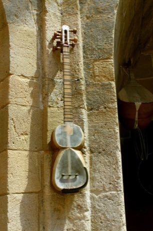

Home / Crossroads and Golden Ages / Persia, Caucasus and Central Asia
Playable heritage gameTar and mugham modes
Also known as Tar · Muğam · Azerbaijani long-neck lute
The tar is a long-necked lute of Azerbaijan with a double-bowled wooden body topped by a thin skin, shaped like a figure eight. Its paired strings are plucked with a small plectrum to set out the modes of mugham, the classical art of modal singing and playing.

How to play
- The neck carries fretted places; each lane marks the note on one string and fret.
- A bead slides down the string toward its place. Pluck that note just as the bead lands.
- Notes marked with a small wave are the in-between pitches of the mode, slightly off the usual steps.
- Begin with the climb and return, then try the rhythmic piece in six and the rising phrase.
Rules at a glance
- The notes follow a mode that uses two in-between pitches between the usual steps, marked with a wave.
- A pluck on the beat is perfect, a near one is good, and extra plucks cost points.
- The rhythmic piece is felt in six beats.
- Every tune is played through twice.
About the tradition
The tar is the central instrument of mugham in Azerbaijan, where singers and players explore a mode through long, improvised sections. Makers carve the body from mulberry wood and cover it with the membrane, and the craft is passed on in workshops and music schools.
Origins
Usually placed in the era of Crossroads and Golden Ages (about 500 to 1500), although its exact origins are uncertain, within the cultural world of Persia, Caucasus and Central Asia.
Credits
- Tradition: the Azerbaijani tar and mugham modes; melodies written for this game
- Photo: Urek Meniashvili, CC BY-SA 3.0, source on Wikimedia Commons
- Text: CC BY-SA 4.0, World Heritage Games.
Sources

Get the app
Tar and mugham modes is one of 9 lutes and fiddles in the Lutes & Fiddles of the World app for Android. Submitted to Google Play; in review. Store links appear here the day it goes live. One app, many traditions, no account needed.
More games to play


.JPG){kind=link}
More from Azerbaijan


Yalli
Azerbaijan · Dances